I. Marc Carlson (aka Diarmaid O'Duinn)
6 November, 1999
HTML Version 6 November 1999/14 June 2000
Revision: 8 April 2002
BACKGROUND:
A farmer uncovered a badly decomposed body in the Moy Bog, Co. Clare, Ireland, in 1931. The remains, which consisted primarily of a few fragments of a garment, and some hair and skin, were removed and eventually the fabric fragments were delivered to the National Museum of Ireland in Dublin. The package in which the garment is wrapped is labeled: "This woolen garment was found on the body of a woman (?) at Moy, Co. Clare. 1931:305 B24:13 Indexed". The files in the Museum contain nothing on either the gown or the body. In fact, the only thing in the file is the correspondence between the farmer who found the gown and the Museum, negotiating over price.
At some point, a Scandinavian woman named Lisa Bender Jorgenssen analyzed several of the textiles at the Museum, including the Moy garment. Her notes for the Moy say: "Moy, Co. Clare, Ireland. NMI 1931:305. Brown dress in woollen [sic] cloth, found on female bog corpse. Post-medieval." It is not clear what she meant by "post-medieval", or upon what basis she drew this conclusion.
Later, Mairead Dunlevy, in her Dress in Ireland, describes the garment as:
"A coarsely woven twill of lightly spun wool, and may have had some slight felting on the inner surface. It has a low round neckline, with the bodice buttoned at centre front and tight sleeves buttoned to underarms. The skirt is shaped with a double gore at centre back and at either side. The front of the skirt did not survive. This Moy gown is of interest since it shows the sewing techniques of the time. Selvedges were used when possible, otherwise the fabric edge was thickened to avoid ravelling. All seams were welted but the neckline was finished neatly with backstitch on the inner face and the bodice fronts were hemmed. The seams of the skirts were sometimes left unfinished towards the bottom, the lower edge of which is so fragmentary that it would be unwise to conjecture as to whether it was ankle or calf-length. The difficulties surmounted in accommodating the sleeves are of interest. The fabric was wrapped around the arm and cut to extend close to the neck. A welted seam attached this to the body of the gown and continued into the sleeve. In this way the weakness of a shoulder seam was avoided. For further strength the two foreparts of the bodice were cut with narrow straps which extended over the shoulders and into triangular gussets between the shoulder blades. A gusset was placed at the front of each armpit for ease of movement and comfort."
After a year and a half of literature searching, I contacted the Museum and asked them for what existed, and they put me in contact with Kass McGann, who had actually seen the garment and done some study of it. Although I did not use her interpretations when doing my interpretation shown here, she was kind enough to share with me some of her photographs and notes taken of the item. Her material may be found at http://www.reconstructinghistory.com/fenians/moy.html. I am obliged to say that Ms. McGann's patience in sharing her unpublished research so that I might include it here has been exemplary.
Finally, Margaret Lannin of the National Museum of Ireland, very kindly sent me a copy of a tracing of the garment.
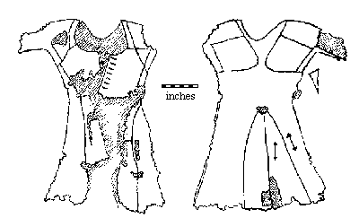
The gown has not been absolutely dated, although from the basic format of the shoulder and gores in the skirt suggests to me that a date between about 1350-1500 is plausible. It appears to me to be a long sleeved woman's garment (assuming the fabric hasn't changed shape too severely, the wearer appeared to have a chest circumference in excess of 30", very small upper arms, short waisted). It has hip-high gores in front and back, and on the sides. The rear gore peaks have been covered by a small piece of fabric, probably used to strengthen the join, although whether this was part of the original design, or a later repair, is not known. The corresponding section of the front did not survive. The fabric is 2/1 woven wool, with a thread count of 18-21 per inch along the horizontal and 20 per inch along the vertical. It is a 2/1 twill of Z-spun singles and the individual threads vary from 1mm to 1.5mm in diameter.
The "shoulder-blade" construction on the back of the gown is made up of two rounded squares, measuring approximately 8" on the inside edge, 8.34" on the top, 7.5" on the bottom and 6.5 where it meets the sleeve. This feature is vaguely similar to the "grand assiette" sleeve on the Charles of Blois pourpoint as well as the larger sleeve openings on the the so-called "Golden Gown of Queen Margarethe", and grants total mobility to the arm. To be honest, I find the similarities conceptual only though. Anecdotal evidence suggests that there may be paintings that depict such shoulders for women�s gowns in the 14th and 15th centuries. Unfortunately, I do not have citations for that material, although I continue to look..
Another triangular gore, 3.5" on top, 4.5" towards the front and 4" on the side, is set into the armpit on the front-side of the seam. A triangular gusset 2" on top, 6" on the outside and 5.75" on the inside sits adjacent to the squares under the arm at the side of the body. This narrow bit of material gives the top of the gown shape added to flare the garment where necessary.
Of the bodice material that does survive, there are 4.5" of fabric on the left side (carrying 4 buttons) and 8.5" on the right (having 7 buttonholes). The shoulder straps that run over the shoulders and around to the back attach at the neckline. They are 2" wide at the bodice and .75" wide as they past over the shoulder. The neckline in front is rather low. From the shoulder ridge on the neckline, it is 12.5" around the curve of the neckline (it is 9.5" in a straight line). The length from shoulder to waist (back-center) is 21". The length from neckline to waist (back-center) is 16". The gore length is at least 24".
There are a number of buttons running up the back of each sleeve from the wrist to nearly the shoulder. They appear from the material that I have seen to be set about (1 �") part. This style is generally consistent with a few other Irish clothing finds, and medieval depiction, although the buttons run further than the elbow, which seems to have been more common outside of Ireland. For examples of this buttoning style, see McLintock.
The buttons appear likely to have been made from glued wads of cloth, which is then covered in cloth, in a fashion consistent with other archaeological examples (although without closer examination, this is conjectural). The buttonholes are set close to the edge of the garment, and the buttons on the edge, again consistent with other 14th-15th century examples.
The buttonholes on the front of the gown are uniformly .7" wide and the buttons are .6" in diameter. The buttonholes are 1.1" apart and the buttons are 1.2" apart, shank to shank.
Contrary to what Dunlevy claimed, there were no welts in the seams. The seams are simple running stitches. The inside of the dress does appear "fulled", but it seems clear that this was because of wear and not fabric processing (it was more "fulled" in the folds where fabric rubbed against fabric and not "fulled" in other areas).
With this information, I decided to create a mock up to find out what the missing parts might have looked like. First I transferred the tracing pattern to a separate fabric, with a grid on it, and only then cut out the pieces (and filed away the original tracing). I transferred these pieces to a cheap fabric to use as a cutting and assembly pattern.
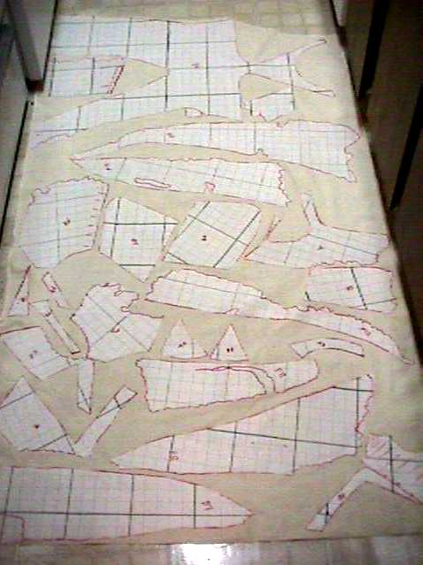
Taking this pattern, I assembled a mock-up of the item as depicted in the tracing diagram. I started with a nice, heavily felted wool to minimize fraying. Because of a miscalculation on my part, I had to piece together two of the gores from smaller pieces, and had to resort to a lighter weight, less felted wool for the arm pieces. I used black cotton thread for this mock-up, and began practicing the back stitch I was going to need to make the final garment. The pieced together gores were assembled with a variation of a shoemaker�s "split stitch", which is unlike the embroidery stitch with the same name. I need to mention that the mock-up was my first ever hand sewn garment, and the first garment I had made from fabric in over 20 years. The sewing is not pretty, but it served its function.
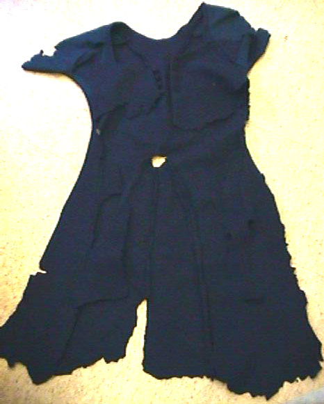
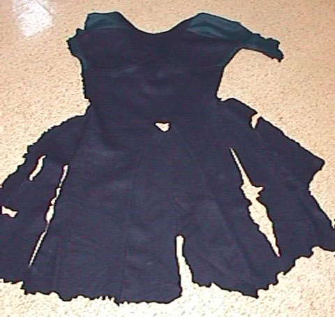
I placed this initial mock-up on a model (who seemed to be just about the right size) to get the following photographs:
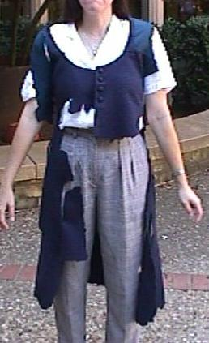
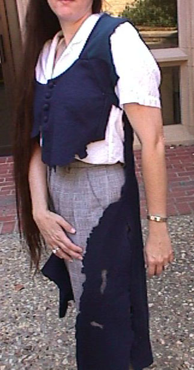
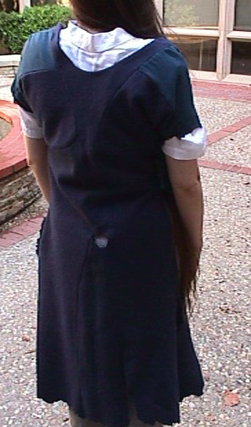
Then, using a slightly lighter gray herringbone wool, I filled in the blank spots as I clearly saw them, reflecting the pattern right and left. This covered most of the garment. As all currently known existing gored outfits from the Middle Ages are bilaterally symmetrical, it was fairly easy to adapt the remaining fragments, and estimate the missing pieces.
There was some question when I began whether the buttons should end at the waist, or continue all the way down, as in a cassock. After examining the few surviving tomb statues of Irish women, I found one from Newtown, Jerpoint, Co. Kilkenny. The buttons down the front only go to the waist. Therefore, when I came to the front of the dress, I mirrored the rear gore to the front (as is normal in medieval garments, and just buttoned the thing down to the waist.
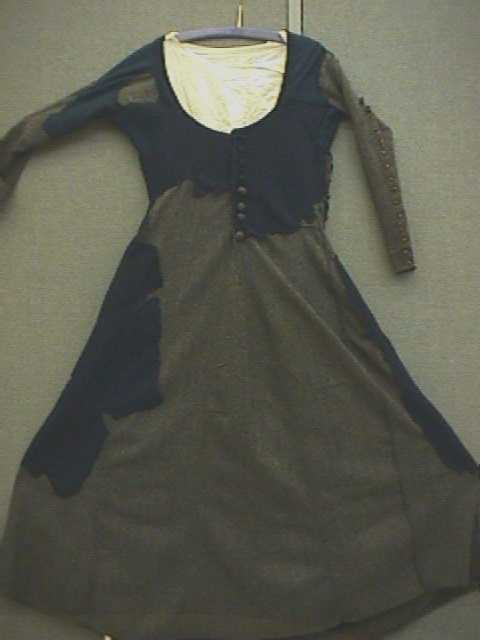
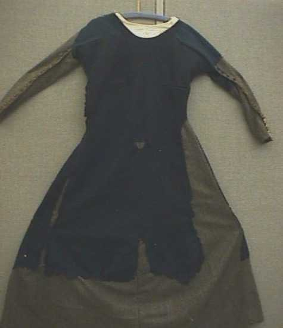
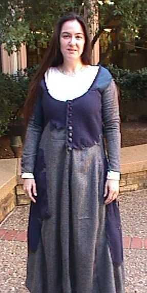
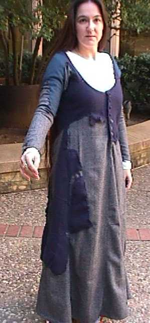
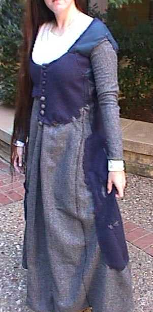
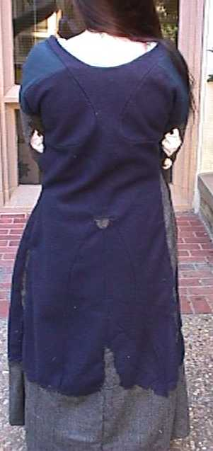
From this, I came up with the following hypothetical pattern:
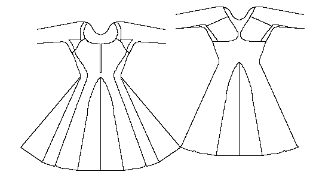
From this pattern, I made a second mock-up, this time in muslin, to check the pattern of the bodice part, and it seemed to fit the lady who will be getting the final version, although there were some unexpected wrinkles that don't match modern aesthetics. The pieces set back and front into the arms to reduce the fabric from the diameter of the arm hole into the tightly fitted sleeve, and to increase the arm's mobility, do tend to fold in strange ways when not in use. These appear to cause no discomfort to the wearer. I did not make the body of the garment more tightly fitted since it is my contention that most medieval garments were not as tightly fitted as modern tastes would suggest. In the case of this dress, the dichotomy between the arm diameter and the torso diameter of the original would tend to rule out anything fitted in the body, unless the original wearer was rather full and robust in the torso, but still maintained a gracile arm size.
Finally, I took a lightweight wool and sewed an interpretation of the garment. I used silk thread cered with beeswax for the stitches. I used a backstitch rather than the original garment's straight stitch, because the fabric was too thin and stretchy to maintain an adequate tension.
I made the buttons from scraps of wool wrapped in wool. I backed the buttonhole areas in a plain, undyed silk, as was done in medieval finds in England.
It will be noticed upon examination that the seams within the garment are in differing stages of being finished. My initial plan had been to hem all the seams on the inside, which struck me as the most convenient way to keep the fabrics fraying in check. Unfortunately, the first time the garment was worn, it became apparent that the rolled seams were not letting the garment stretch and adapt to the woman wearing it at all. Pulling out the rolls cleared up most of the fitting problems. I have not yet reached a solution to this seam-finishing problem.
[As a note, April 2002, I am still not happy with the way this version looks, and after listening to Robin Netherton's discussion of how the "Gothic Tightly Fitted Dress" is supposed to work, I realized that to some extend, the garment isn't supposed to adapt to the wearer, but to some extent to help shape the wearer to an ideal of what she should look like. In short, the seam finishing decision was likely a poor one on my part].
There is a portion of fabric on the lower right breast that has been repaired, although not by me. During the construction of the garment, I noticed that a hole was developing in the fabric, although I don�t know what the cause might have been � carelessness on my part, a flaw in the fabric, or insects. I basted two patches to the area, one outside and one inside the garment to stabilize the hole.
As may be seen in these photos of the garment and its final recipient, the outfit is an interesting exercise. Clearly it is not an "attractive" garment to modern eyes � in many ways it is far too "frumpy" and the lines of its folds are totally unlike any modern garment with which I am familiar. I am fairly certain that the triangular "wedge" area seen in the photo to the right, from the shoulder insets to the top of the gore in back is an artifact of the twilight sun, rather than an aspect of the garment. The wedge is there, but it certainly is not as pronounced.
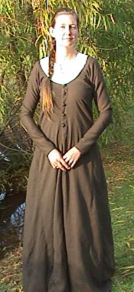
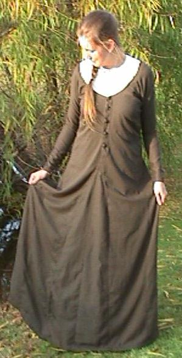
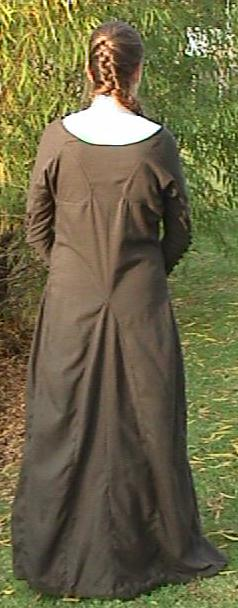
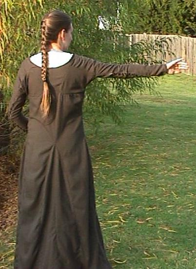
The engineering in this outfit is very interesting to me. For example, the shoulders are clearly intended to be set this low, however, they are just as clearly intended to go no further, as the structure of the neck opening holds the opening in place by the weight of the garment.
The arms, combining comfort and arm mobility, while remaining so firmly fitted, are very well designed. The stress of the shoulders being held by unseamed straps, ending at the bodice in a manner vaguely reminiscent of the Nordic oval broaches, is completely unlike any other medieval, or post-medieval, garment I am familiar with.
CONCLUSION:
With any examination at all, this is a very interesting garment, and the fact that it has been relegated to a back shelf in an under-appreciated museum, rather than studied and published says some truly unpleasant things about the state of modern archaeology. This gown may have a great deal to tell us about the Middle Ages, particularly in Ireland, about what was worn and what was possible to do with the materials at hand.
Unfortunately, since the garment can not - at this time, be adequately proven to be medieval, or even made for a woman, we probably should be very careful about major conclusions we draw from it.
Although it was not used in this reconstruction, there is another web page with a very good reproduction of this gown at http://www.reconstructinghistory.com/fenians/moy.html. You might want to look at it as well.